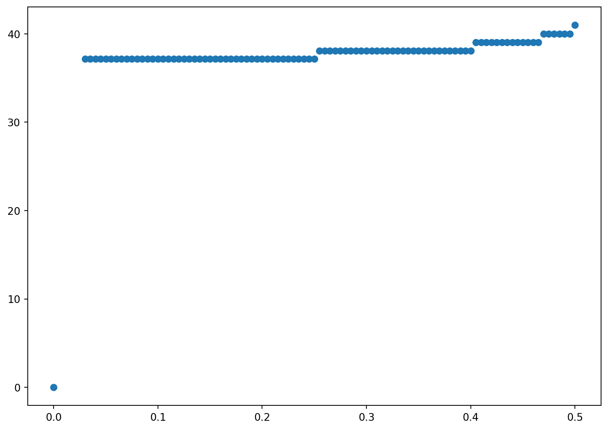

14 Binomial and Trinomial Models
This chapter builds on the binomial tree foundations from ?sec-c:trees to explore advanced applications and techniques. We focus on specialized implementations, performance optimizations, and extensions to multiple asset problems. The fundamental concepts of backward induction and parameter calibration are covered in the earlier chapter on binomial trees.
14.1 Advanced Binomial Applications
Having covered the basic binomial tree framework in ?sec-c:trees, we now turn to specialized applications where binomial models excel. The key advantage of binomial models over Monte Carlo methods lies in their efficiency for early exercise features and their ability to provide precise exercise boundaries.
14.2 Alternative Parameter Sets
While ?sec-c:trees covered the popular Cox-Ross-Rubinstein parameters and other standard parameter choices, we focus here on specialized parameter sets that offer advantages for multi-asset applications.
Trigeorgis Parameters for Multi-Asset Models
When we consider binomial models for multiple assets, we will use the tree proposed by Trigeorgis (Trigeorgis 1991), because it is the simplest to explain in that context. Trigeorgis proposes choosing \(p\), \(u\) and \(d\) so that the mean and variance of \(\Delta \log S\) in the binomial model match those in the continuous-time model exactly, where \(\mathrm{n}u = r - q - \sigma^2/2\) is the drift of the log price process. This means that
\[\begin{align*} \frac{p\log u+(1-p)\log d}{\Delta t} &= \mathrm{n}u\; ,\\ \frac{p(1-p)(\log u-\log d)^2}{\Delta t} &= \sigma^2\;. \end{align*}\]
These are two equations in the three unknowns, leaving one degree of freedom, so Trigeorgis takes \(d=1/u\), as do Cox, Ross and Rubinstein. As we will show in the next section, taking \(d=1/u\) simplifies the calculations of deltas and gammas. Solving these two equations yields1
\[ \log u=\sqrt{\sigma^2\Delta t + \mathrm{n}u^2(\Delta t)^2}\;, \qquad(14.1)\]
\[ p = \frac{1}{2}+\frac{\mathrm{n}u\Delta t}{2\log u}\;. \qquad(14.2)\]
These Trigeorgis parameters prove particularly useful in multi-asset applications as we will demonstrate later in the chapter. The choice of \(d = 1/u\) not only ensures tree recombination but also simplifies the calculation of option sensitivities, as we explore in the next section.
14.3 Binomial Greeks
To estimate Greeks in any valuation model, one can run the valuation program twice, for two different parameter values, and then estimate the Greek as the difference in value divided by the difference in parameters. For example, to estimate vega when the volatility of the underlying is \(\sigma\), we could estimate the derivative value for a volatility of \(0.99\sigma\) and for a volatility of \(1.01\sigma\). Denoting the former derivative value by \(C_d\) and the latter by \(C_u\), the vega can be estimated by \[\frac{C_u-C_d}{1.01\sigma-0.99\sigma} = \frac{C_u-C_d}{0.02\sigma}\; .\] We can in principle obtain a more precise estimate of the derivative by making a smaller change in the parameter (e.g., using \(0.999\sigma\) and \(1.001\sigma\)) but computer round-off errors limit how small a parameter change one should take in practice.
To estimate the gamma when the price of the underlying is \(S\), we need to estimate the derivative value at two other prices for the underlying, which we will call \(S_u\) and \(S_d\), with \(S_u>S>S_d\). As just explained, the estimate of the delta (which we continue to denote by \(\delta\)) would be \[ \delta = \frac{C_u-C_d}{S_u-S_d}\;, \qquad(14.3)\]
where \(C_u\) denotes the derivative value when the underlying is equal to \(S_u\) and \(C_d\) denotes the derivative value when the underlying is equal to \(S_d\). Letting \(C\) denote the derivative value when the underlying is equal to \(S\), two other obvious estimates of the delta are \[\delta_u = \frac{C_u-C}{S_u-S} \qquad \text{and} \qquad \delta_d = \frac{C-C_d}{S-S_d}\; .\] The first of these should be understood as an estimate of the delta when the price of the underlying is at the midpoint of \(S_u\) and \(S\), and the second is an estimate of the delta when the price of the underlying is at the midpoint of \(S_d\) and \(S\). The distance between these midpoints is \[\frac{S_u+S}{2} - \frac{S_d+S}{2} = \frac{S_u-S_d}{2}\; ,\] so we obtain an estimate of \(\Gamma\) (the derivative of \(\delta\)) as \[ \Gamma = \frac{\delta_u-\delta_d}{(S_u-S_d)/2}\;. \qquad(14.4)\]
In a binomial model, it is possible to compute the most important Greeks, delta and gamma, more efficiently than by simply running the valuation program several times. Assume we have taken \(d=1/u\), so after an up and a down move (or a down and an up move) the stock price returns to its initial value \(S\). After fixing the length \(\Delta t = T/N\) of each time period, we redefine \(N=N+2\). This results in an \(N+2\) period tree covering a time period of length \(T+2\Delta t\). Now consider the tree starting two periods from the initial date. At the middle node shown below, the stock price is \(udS=S\). Ignoring the top and bottom nodes and the branches that follow them, the result of adding two periods is that the tree starting from \(udS\) is an \(N\)–period tree for a time period of length \(T\).

Hence, the derivative price calculated at the middle node will be the price we are trying to estimate. The derivative price at the top node will be the value of a derivative of maturity \(T\) when the initial price of the underlying is \(u^2S\). Similarly, the derivative price at the bottom node will be the value of a derivative of maturity \(T\) when the initial price of the underlying is \(d^2S\). Thus, when we back up in the tree to this date, we will have all of the information we need to return an estimate of the derivative value and to return estimates of the delta and gamma, taking \(S_u=u^2S\) and \(S_d = d^2S\) in Equation 14.3 and Equation 14.4. We are not interested in the tree to the left of what is shown above.
Trinomial Valuation of American Options
The trinomial model is a special case of an explicit finite difference method for solving partial differnetial equations; however, it requires no knowledge of partial differential equations. It is similar to a binomial model in that it is a tree. As the name suggests, the trinomial model has three branches up, down, and middle. The middle branch eliminates the up down behavior and can lead to smoother exercise boundaries. We will use the following parameterization: at each node the stock price grows by a factor \(u=e^{\sigma \sqrt{3 \Delta t}}\), stays the same, or declines by a factor of \(d=1/u\). In this sense, it inherits some of the tractabilty of the Cox, Ross, and Rubenstein model in the sense that the stock price at all nodes can be expressed as the initial stock price times \(u\) to a power. The probabilities are given by
\[ p_u = \frac{1}{6} + \sqrt{\frac{\Delta t}{12 \sigma^2}} \left(r - \frac{\sigma^2}{2}\right)~~~p_m =2/3~~p_d= \frac{1}{6} - \sqrt{\frac{\Delta t}{12 \sigma^2}} \left(r - \frac{\sigma^2}{2}\right) \]
While there are many choices for the parameterization they are not completely arbitrary. The probability \(p_m =2/3\) roughly corresponds to plus or minus one standard devation of a normal distribution and the up and down probabilities capture the tails. There are other parameterizations which can work ust as well.
Conceptually, although there are three states and only two assets and the market is incomplete, the model converges to the Black Scholes model but there is no direct replication strategy. Nevertheless, we are modelling the price in a risk-neutral probability. More importantly it does potentially give a better estimate of derivative prices.
Code
import numpy as np
import matplotlib.pyplot as plt
import time
from math import pow, exp, sqrt
# parameters
# number of steps
n = 100
# interest rate
r = .1
# volatility
sig = .2
# Initial Stock Price
S0 = 42
# Strike Price
K = 42
# Maturity
T = 0.5
# calculate parameters for trinomial model
dt = T/n
a = np.exp(r*dt)
u = np.exp(sig*np.sqrt(3*dt))
d = 1/u
pu = 1/6 + np.sqrt(dt/(12*sig**2))*(r - sig**2/2)
pm = 2/3
pd = 1 - pu - pm
# Build vector of ending values
# and prices for which put is exercised
vec = np.arange(2*n+1)
vec1 = np.ones(2*n+1)
S = S0 * u**(vec-n*vec1)
AP = np.maximum(K-S,0)
ex = S[AP>0]
# eb is an array to save the boundary price
eb = np.zeros(n+1)
eb[n] = ex.max()
# Backward recursion in the loop
for i in range(n):
vec = np.arange(2*(n-i-1)+1)
vec1 = np.ones(2*(n-i-1)+1)
# Possible Stock prices at times-i period
S = S0 * u**(vec-(n-i-1)*vec1)
# P calculates the value of early exercise
P = np.maximum(K - S, 0)
# PP calculates value of waiting using payoffs from next period
PP = (pu*AP[2:(2*(n-i)+1)] + pm*AP[1:(2*(n-i))] + pd*AP[0:(2*(n-i)-1)])/a
# AP is the max of ealry exercise and waiting
AP = np.maximum(P,PP)
# ex is prices where early exercise is optimal
ex = S[(AP-PP)>0]
# eb calculates the highest price
# where exercise is optimal to plot boundary
if ex.shape[0]>0:
eb[n-i] = ex.max()
else:
eb[n-i] = np.nan
print('The American put price is=', AP[0])
# plot the exercise boundary
plt.figure(figsize=(10,7))
plt.scatter(dt*np.arange(n+1),eb)The American put price is= 1.6396310315369165
We again provide a program which does the same calculation using loops. It is much slower. We use the same parametrs and preamble as before and just outline the steps. As in the binomial model, we start at the last date and build \(2n+1\) terminal stock prices. We also keep track of the highest stock price which we exercise.
Code
import numpy as np
import matplotlib.pyplot as plt
import time
from math import pow, exp, sqrt
# parameters
# number of steps
n = 100
# interest rate
r = .1
# volatility
sig = .2
# Initial Stock Price
S0 = 42
# Strike Price
K = 42
# Maturity
T = 0.5
# calculate parameters for trinomial model
dt = T/n
a = np.exp(r*dt)
u = np.exp(sig*np.sqrt(3*dt))
d = 1/u
pu = 1/6 + np.sqrt(dt/(12*sig**2))*(r - sig**2/2)
pm = 2/3
pd = 1 - pu - pm
# Build vector of ending values
# and prices for which put is exercised
ex = np.zeros(n+1)
S = np.zeros(2*n+1)
AP = np.zeros(2*n+1)
for j in range(2*n+1):
S[j] = S0*u**(j-n)
AP[j] = max(K-S[j],0)
if AP[j]>0:
ex[n] = S[j]We then move backwards. There are two loops. The inner loop builds the stock price, the value, and exercise boundary at each time and the outer loop moves backwards in time.
Code
for i in range(n):
S = np.zeros(2*(n-i-1)+1)
P = np.zeros(2*(n-i-1)+1)
PP = np.zeros(2*(n-i-1)+1)
for j in range(2*(n-i-1)+1):
S[j] = S0*u**(j-(n-i-1))
#
# P calculates the value of early exercise
P[j] = max(K-S[j],0)
#
# PP calculates value of waiting using payoffs
# from next period
PP[j] = (pu*AP[j+2] + pm*AP[j+1] + pd*AP[j])/a
#
# AP is the max of ealry exercise and waiting
AP[j] = max(P[j],PP[j])
#
# ex is price where early exercise is optimal
if P[j] > PP[j]:
ex[n-i] = S[j]
print('The American put price is =', AP[0])
# plot the exercise boundary
plt.figure(figsize=(10,7))
plt.scatter(dt*np.arange(n+1),ex) The American put price is = 1.6396310315369165
14.4 Accelerating Binomial Convergence
Broadie and Detemple (Broadie and Detemple 1997) show that a modified binomial model is a quite efficient way to value American put options. They modify the binomial model as follows: (i) the Black-Scholes formula is used to value the option at the penultimate date, and (ii) Richardson extrapolation is used to estimate what the option value would be with an infinite number of periods.
If an option is not exercised at date \(N-1\) in an \(N\)–period binomial model (i.e., one date from the end), then, because in the binomial model there are no further opportunities for early exercise, the American option at date \(N-1\) is equivalent to a European option at that date. The value of a European option is given by the Black-Scholes formula. Therefore, the estimate of the option value can be improved by replacing withat date \(N-1\) (of course this also means that we do not need to compute the intrinsic value at date \(N\)). This idea can be effectively used in binomial valuation of any option for which there is a closed-form solution (like the Black-Scholes formula) for the value of the corresponding European option in a continuous-time model.
Broadie and Detemple combine the use of the Black-Scholes formula at date \(N-1\) with Richardson extrapolation. Richardson extrapolation is a method that may improve the efficiency of any algorithm by extrapolating to the limit. In the case of a binomial model, the idea is to extrapolate the values calculated for different numbers of periods (different \(N\)**s) to try to estimate the value for \(N=\infty\).
It is easier to work with convergence to zero than convergence to infinity, so define \(x=1/N\). For any value of \(N\), the binomial model will return a value, which is an estimate of the option value and which we denote as \(y=f(x)\). We would like to know the value at \(N=\infty\), which in this notation is \(f_0\). Of course, we cannot calculate \(f_0\), because we do not know the function \(f\), but we can approximate \(f\) by a known function \(g\) and then estimate \(f_0\) by \(g_0\).
A linear approximation is the simplest and is shown by Broadie and Detemple to be quite effective. For a linear approximation, we would take \[g(x) = a + bx\] for parameters \(a\) and \(b\) to be determined. We can input values \(N_1\) and \(N_2 = 2N_1\) for the number of periods, run the binomial model for each, set \(x_i=1/N_i\), and define \(y_i=f(x_i)\) to be the value of the option returned by the binomial model when the number of periods is \(N_i\). Then we force \(g(x_i)=f(x_i)\) for \(i=1,2\) by solving the equations \[y_i=a + bx_i\] for \(a\) and \(b\). Of course, \(g_0 = a\), so we will return the constant \(a\) as our estimate of \(f_0\). This is simpler than it may appear—we put \[\begin{equation*}\begin{array}{rclcl} y_1 &= &a + bx_1 &= &a+2bx_2\;,\\ y_2 &= & & & a + bx_2 \;, \end{array}\end{equation*}\] and subtracting gives us \(y_1-y_2 = bx_2\), which implies from the bottom equation that \(a = 2y_2-y_1\). We can think of \(N_2\) as being the number of periods we want to use in the binomial model, in which case \(y_2\) would be our estimate of the option value. Richardson extrapolation here means also running the binomial model for half as many periods (\(N_1 = N_2/2\)) and adding the difference of the estimates \(y_2-y_1\) to the estimate \(y_2\).
Richardson extrapolation can be viewed as cancelling the first-order term in the Taylor series expansion of \(f\). We have \[\begin{align*} y_1 = f(x_1) &= f_0 + f**_0x_1 + \text{higher order terms} \\ & = f_0 + 2f**_0x_2 + \text{higher order terms}\;,\\ y_2 = f(x_2) &= f_0 + f**_0x_2 + \text{higher order terms}\;. \end{align*}\] This implies \[2y_2-y_1 = f_0 + \text{difference of higher order terms}\;.\] Having eliminated the first-order term, one can hope to obtain a closer approximation to \(f_0\).
We now show hot to implement this in Pyhton.
First we create a binomial valuation program that replaces (i) calculation of the intrinsic value at maturity and (ii) calculation of the value at the penultimate date as the larger of intrinsic value and the discounted value at maturity with (iii) calculation of the value at the penultimate date as the larger of intrinsic value and the Black-Scholes value of a European option with one period to maturity.
Code
# First define the Black-Scholes function needed for the acceleration method
def blackscholes(S0, K, r, q, sig, T, call=True):
"""Calculate option price using B-S formula."""
from scipy import stats
import numpy as np
d1 = (np.log(S0/K) + (r - q + sig**2/2) * T)/(sig*np.sqrt(T))
d2 = d1 - sig*np.sqrt(T)
norm = stats.norm
if call:
return np.exp(-q*T)*S0 * norm.cdf(d1,0,1) - K * np.exp(-r * T) * norm.cdf(d2,0, 1)
else:
return -np.exp(-q*T)*S0 * norm.cdf(-d1,0,1) + K * np.exp(-r * T) * norm.cdf(-d2,0, 1)
def binomialbd(n,r,sig,S0,y,K,T):
# parameters
# number of steps
#n
# interest rate
#r
# volatility
#sig
# Initial Stock Price
#S0
# Strike Price
#K
# Maturity
#T
# dividend yield
# y
# calculate parameters for binomial model
dt = T/n
delt = np.exp(-y*dt)
a = np.exp(r*dt) * delt
u = np.exp(sig*np.sqrt(dt))
d = 1/u
pu = (a-d)/(u-d)
pd = 1-pu
# Build vector of ending values
#
S = np.zeros(n)
AP = np.zeros(n)
# Build vector of ending values
# at the next to last date (penultimate date)
vec = np.arange(n)
vec1 = np.ones(n)
S = S0 * u**(2*vec - (n-1)*vec1)
AP = np.maximum(K-S,blackscholes(S, K, r, y, sig, dt, call = False))
# Backward recursion in the loop
for i in range(n-1):
vec = np.arange(n-i-1)
vec1 = np.ones(n-i-1)
# Possible Stock prices at times-i period
S = S0 * u**(2*vec-(n-i-1)*vec1+1)
# S = S0 * u**(2*vec-(n-i))
# P calculates the value of early exercise
P = np.maximum(K*vec1 - S, 0)
# PP calculates value of waiting using payoffs from next period
PP = (pu*AP[1:(n-i)] + pd*AP[0:(n-i-1)])/a
# AP is the max of ealry exercise and waiting
AP = np.maximum(P,PP)
return AP[0] Now we create a program that uses Richardson extrapolation from a binomial model with N periods and a binomial model with N/2 periods to estimate the value from a binomial model with an infinite number of periods. We use the previous program as our binomial model. The number of time steps \(n\) must be even so \(n/2\) is an integer. In the following we initally use \(n=20\), which is smaller than the the number of steps in the previous binomial american option routines.
Code
import numpy as np
import matplotlib.pyplot as plt
import time
from math import pow, exp, sqrt
#inputs
#number of steps= n; must be an even number
n=20
# interest rate
r=.1
# volatility
sig=.2
# initial stock price
S0=42
# dividend yield
y=0
# Strike price
K=42
# expiration
T=0.5
if 2*int(n/2) == n:
y2=binomialbd(n,r,sig,S0,y,K,T)
y1=binomialbd(int(n/2),r,sig,S0,y,K,T)
extrapolate= 2*y2-y1
print('The extrapolated value=',extrapolate)
else:
print('n must be even you big dummy!!') The extrapolated value= 1.649591726616913814.5 Binomial Valuation of Basket and Spread Options
By combining binomial models, we can value options or other derivatives on multiple assets. We will illustrate for an option on two assets. This is the most important case, and the extension to more than two assets is straightforward.
Consider two stocks with constant dividend yields \(q_i\) and constant volatilities \(\sigma_i\). Suppose the two Brownian motions driving the two stocks have a constant correlation coefficient \(\rho\). We will denote the price of stock \(i\) (\(i=1,2\)) in the up state in each period by \(u_iS_i\) and the price in the down state by \(d_iS_i\), where \(S_i\) is the price at the beginning of the period, and \(u_i\) and \(d_i\) are parameters to be specified. In each period, there are four possible combinations of returns on the two stocks: up for both stocks, up for stock 1 and down for stock~2, down for stock 1 and up for stock 2, and down for both stocks. Denote the probabilities of these four combinations by \(p_{uu}\), \(p_{ud}\), \(p_{du}\), and \(p_{dd}\) respectively. Thus, there are eight parameters in the binomial model: the number \(N\) of periods (which defines the length of each period as \(\Delta t=T/N\) where \(T\) is the option maturity), the up and down parameters \(u_i\) and \(d_i\) for each stock, and three probabilities (the fourth probability being determined by the condition that the probabilities sum to one).
Given the period length \(\Delta t\), we want to choose the up and down parameters and the probabilities to match (or approximately match in an appropriate sense) the means, variances and covariances of the returns \(\Delta S_i/S_i\) or the continuously-compounded returns \(\Delta \log S_i\). There are two means, two variances and one covariance, so there are five restrictions to be satisfied and seven parameters. It is convenient to take \(d_i = 1/u_i\), leaving five restrictions and five free parameters.
As discussed in ?sec-s:binomialparameters, there are multiple ways to define the binomial model so that it converges to the continuous-time model as the number of periods is increased. As an example, we will describe here the suggestion of Trigeorgis (Trigeorgis 1991), which matches the means, variances and covariance of the continuously-compounded returns. Letting \(p_i\) denote the probability of the up state for stock \(i\), matching the means and variances implies, as in ?sec-s:binomialparameters, \[\begin{align*} \log u_i&=\sqrt{\sigma_i^2\Delta t + \nu_i^2(\Delta t)^2}\; ,\\ p_i &= \frac{1}{2}+\frac{\nu_i\Delta t}{2\log u_i}\;. \end{align*}\] where \(\nu_i=r-q_i-\sigma_i^2/2\). In terms of the notation \(p_{uu}\), \(p_{ud}\), \(p_{du}\), and \(p_{dd}\), the probability of the up state for stock 1 is \(p_1=p_{uu}+p_{ud}\) and the probability of the up state for stock 2 is \(p_2=p_{uu}+p_{du}\). Therefore,
\[ p_{uu}+p_{ud} = \frac{1}{2}+\frac{\nu_1\Delta t}{2\log u_1}\;, \qquad(14.5)\]
\[ p_{uu}+p_{du} = \frac{1}{2}+\frac{\nu_2\Delta t}{2\log u_2}\;. \qquad(14.6)\]
In the continuous time model, over a discrete time period \(\Delta t\), the covariance of \(\Delta \log S_1\) and \(\Delta \log S_2\) is \(\rho\sigma_1\sigma_2\Delta t\). In the binomial model, with \(d_i=1/u_i\), we have \[ \mathbb{E} \big[\Delta \log S_1 \times \Delta \log S_2\big] = (p_{uu}-p_{ud}-p_{du}+p_{dd})\log u_1\log u_2\;. \] Given that \(\mathbb{E}[\Delta\log S_i] =\nu_i\Delta t\), this implies a covariance of \[ (p_{uu}-p_{ud}-p_{du}+p_{dd})\log u_1\log u_2 - \nu_1\nu_2(\Delta t)^2\;. \] Matching the covariance in the binomial model to the covariance in the continuous-time model therefore implies \[ p_{uu}-p_{ud}-p_{du}+p_{dd} =\frac{\rho\sigma_1\sigma_2\Delta t + \nu_1\nu_2(\Delta t)^2}{\log u_1\log u_2}\;. \qquad(14.7)\]
We can solve the system Equation 14.5 - Equation 14.7, together with the condition that the probabilities sum to one, to obtain the probabilities \(p_{uu}\), \(p_{ud}\), \(p_{du}\), and \(p_{dd}\). This solution and a Python function for valuing an American spread call option are given later. This function operates much like the binomial valuation of American options described earlier. The primary difference is that the value of the option at maturity depends on both stock prices, so we have to consider each possible combination of stock prices. In an \(N\)–period model, there are \(N+1\) nodes at the final date for each of the two stocks, and hence \((N+1)^2\) possible combinations of nodes. In fact, at each date \(n\) (\(n=0,\ldots,N\)) there are \((n+1)^2\) combinations of nodes to be considered.
The computation time required for a spread call option is therefore roughly the square of the time required for a standard call.
Likewise, in an \(N\)–period model for a basket option written on three assets, there are \((n+1)^3\) combinations of nodes to be considered at date \(n\); if there are five assets, there are \((n+1)^5\) combinations, etc. Thus, the computation time required increases exponentially with the number of assets. This can be a serious problem. For example, with five assets and \(N=99\), we would have \(100^5\) (10 billion) combinations. As this suggests, problems with multiple assets quickly become intractable in a binomial framework. This is called the curse of dimensionality.
14.6 Exercises
Exercise 14.1 Consider an at-the-money European call option on a dividend-reinvested stock with six months to maturity. Take the initial stock price to be $50, the interest rate to be 5% and $=$30%. Compute the value in a binomial model with \(N=10, 11, \ldots, 20\) and plot the values against \(N\). Plot your results. Is convergence monotone?
Exercise 14.2 Consider the same option as in the previous problem. Roughly what value of \(N\) is needed to get penny accuracy? (To evaluate the accuracy, compare the price to the price given by the Black-Scholes formula.)
Exercise 14.3 Repeat the two previous problems only instead of the Cox, Ross Rubenstein model, use the Jarrow Rudd model.
Exercise 14.4 The early exercise premium is the difference between the value of an American option and the value of a European option with the same parameters. Compute the early exercise premium for an American put and various values for the interest rate, exercise price, and stock parameters. Under what circumstances is the early exercise premium relatively large?
Exercise 14.5 A shout option is an option where the holder is entitled to shout at any time before the expiration of the option. Upon shouting, the holder receives the immediate exercise value paid at expiration, plus an at the money option with the same expiration as the original option. The payoff to this option if the holder shouts at time \(\tau\) is thus given as \(\max(0, S(\tau)-K, S_T-K )\) where \(K\) is the original strike price.
1) Show that it is better to shout at some time where \(S(\tau)>K\) than to never shout at all. 2) Modify the code for an American put to find the optimal exercise boundary for a shout option. Hint: The payoffs on the last nodes of the tree are simply \((S_T - K)^+\). Then work backwards. The `immediate exercise value’ which is the present value of \(S_t-K\), (\(e^{-r(T-t)} (S_t -K)\)) plus the Black Scholes value (use a python function) of an at the money option with expiration \(T-t\). Choose the maximum of these values at each node. For each time store the highest price at which you exersize. The first node (time 0) then gives the price. Plot the exercise boundary.
Broadie, M., and J. Detemple. 1997. “American Option Valuation: New Bounds, Approximations, and a Comparison of Existing Methods.” Review of Financial Studies 9: 1211–50.
Trigeorgis, A. 1991. “A Log-Transformed Binomial Analysis Method for Valuing Complex Multi-Option Investments.” Journal of Financial and Quantitative Analysis 26: 309–26.
Notice that if we were to drop the \((\Delta t)^2\) term in Equation 14.1 (which we could do because it becomes increasingly negligible as \(\Delta t \rightarrow 0)\), then Equation 14.1 would be the same as the Cox-Ross-Rubinstein up parameter \(u = \mathrm{e}^{\sigma\sqrt{\Delta t}}\). The different choices of \(p\) in the Cox-Ross-Rubinstein approach and Equation 14.2 can be understood as follows. The Cox-Ross-Rubinstein approach implies that the expected stock price \(pS_u + (1-p)S_d\) equals \(\mathrm{e}^{(r-q)\Delta t}S\), focusing on the expected return. The Trigeorgis method (Equation 14.2) implies that the expected log stock price \(p \,\log S_u + (1-p) \log S_d\) equals \(\log S + \mathrm{n}u \Delta t\), focusing on the expected continuously-compounded return.↩︎